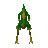
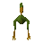
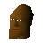

Gnome Ball Field
Location at 2401, 3487 · Kingdom of Kandarin
Open on the world map → Open in knowledge graph → Below: Gnome Ball Field (underground)
NPCs
| NPC | Level | Spawns | Notable drops |
|---|---|---|---|
 Mounted terrorbird gnome | 31 | 2 | |
 Terrorbird | 28 | 9 | |
| 23 | 8 | ||
| 23 | 1 | ||
| 1 | 4 | ||
| 1 | 1 | ||
| 1 | 11 | ||
| 1 | 6 | ||
| 1 | 8 | ||
| 1 | 5 | ||
| 1 | 3 | ||
| 1 | 1 | ||
| 1 | 7 | ||
| 1 | 7 | ||
| Butterfly | 5 | ||
| Butterfly | 2 | ||
| Butterfly | 2 | ||
| 2 | |||
| 7 | |||
 Gnome ball referee | 1 | ||
| 4 | |||
| 4 | |||
| 6 | |||
| 2 |